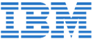

SHF: Small: Collaborative Research:Text Retrieval in Software Engineering 2.0 - CCF-Software and Hardware Foundations
Marcus, A. (PI). Collaborative research with Sonia Haiduc from Florida State University
Dates: 09/01/15 - 08/30/18
CI-P:Collaborative Proposal: Advanced Text Analysis Infrastructure for Software Engineering - CRI-Computing Research Infrastructure
Marcus, A. (PI). Collaborative research with Lori Pollock and Vijay Shanker from the University of Delaware and Emily Hill from Montclair State University
Dates: 06/15/12 - 05/31/13
RAENG Distinguished Visiting Fellowship - United Kingdom
Marcus, A. (PI). Collaboration with Peter Andras, from Newcastle University, UK
Dates: 2011 - 2012
WSU Career Development Chair Award
Marcus, A. (PI)
Dates: 06/01/10 - 05/30/11
SHF:Small:Collaborative Research:Better Comprehension of Software Engineering Data - CCF-Software and Hardware Foundations
Marcus, A. (PI). Collaborative research with Tim Menzies from West Virginia University
Dates: 08/15/10 - 08/14/13
Management of Unstructured Information during Software Evolution - CAREER
Marcus, A. (PI)
Dates: 08/01/09 - 07/31/14
Supporting Software Evolution by the Combined Analysis of Textual and Structural Information - Software for Real-World Systems (SRS)
Marcus, A. (PI) and Rajlich, V.
Dates: 07/01/08 - 06/30/11
STEP Research and Education Test Bed - West Virginia University Research Corporation - Subcontract - Tim Menzies
Marcus, A. (PI)
Dates: 05/01/08 - 10/31/08

UIMA Meets Software Artifact Traceability in Eclipse - IBM Eclipse Innovation Award
Marcus, A. (PI)
Dates: 2006
Design of Incremental Change - Science of Design (SoD)
Rajlich, V. (PI), Marcus, A. (Co-PI) and Draghici, S.
Dates: 05/01/05 - 04/30/08
Novel Algorithms & Organisms for Onto-Tools - NIH
Draghici, S. (PI), Marcus, A. (Co-PI), Rajlich, V. and Tainsky, M.